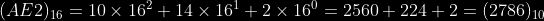

Group the binary number into groups of four digits and match them with the corresponding hexadecimal value. For example:
Write the corresponding binary number for each digit of the hexadecimal number. For example:

The corresponding decimal number to a binary or hexadecimal number will be the sum of their digits multiplied by powers of 2 for binary
, and 16 for hexadecimal. The exponent depends on what position the digit is in. By convention, the zeroth power is the right most.
For example:


Select the base of your number in the top row and the base you want to convert it to in the bottom row.
. In computer systems, there are several different techniques used to represent numbers. The three techniques consider here are Sign Magnitude, Two's Complement, and One's Complement.
In signed magnitude, the most significant bit acts as the sign. The max range of an n-bit number
using sign magnitude is between  and . Note that,
there are two representations for zero with sign magnitude, for example 10000000 and 00000000.
and . Note that,
there are two representations for zero with sign magnitude, for example 10000000 and 00000000.
To make this representation:
Convert the absolute value of the number to binary.
Pad bits if needed and use the MSb for the sign: 0 for positive, 1 for negative.
A ones' complement system or ones' complement arithmetic is a system in which negative numbers
are represented by the inverse of the binary representations of their corresponding positive numbers. The max range
of an n-bit number using one's complement is between  and
and  .
Note that like sign magnitude representation, there is also two ways to represent zero with one's complement, 1111 and 0000 for example.
.
Note that like sign magnitude representation, there is also two ways to represent zero with one's complement, 1111 and 0000 for example.
To make this representation:
Convert the absolute value of the number to binary.
Complement the binary number.
Two's complement is the most common method of representing signed integers on computers, and more generally, fixed point binary values.
Compared to other systems for representing signed numbers (e.g., ones' complement), two's complement has the advantage that the fundamental arithmetic operations of addition, subtraction, and multiplication are identical to those for unsigned binary numbers (as long as the inputs are represented
in the same number of bits as the output, and any overflow beyond those bits is discarded from the result). This property makes the system simpler to implement,
especially for higher-precision arithmetic. Unlike ones' complement systems, two's complement has no representation for negative zero, and thus does not suffer
from its associated difficulties. The max range of an n-bit number using two's complement is between and 
To make this representation:
Find the one's complement representation of the number.
Add 1 to the result.
A truth table consists of true/false values for Boolean variables. One row per each possible
combination of arguments. Each row gives the unique function value for specified arguements.
For N inputs there are 2^N rows.
The number of boolean functions in N-variables is 2^(2^N).
Boolean variables and their complements are sometimes refered to as literals. The AND of one or more literals is called a product or implicant. A minterm is a product involving all implicants for the function (i.e., if the function is in N-inputs, an implicant will consist of N literals). Similarly, the OR of literals is often called a sum and a maxterm is a sum involving all implicants for the function.
The SOP form can be a succinct way of describing a circuit via
Boolean expressions. To form the SOP from a truth table,
simply AND the variables together that yield true output and OR all these expressions together.
The dual notion of SOP is POS. To form the POS, simply OR the opposite of the variables together
that yield false output and AND all these expressions together.
Using a truth table, one can easily convert between the two forms.
| a | b | c | F |
|---|---|---|---|
| 0 | 0 | 0 | 0 |
| 0 | 0 | 1 | 1 |
| 0 |
1 | 0 | 0 |
| 0 | 1 | 1 | 0 |
| 1 | 0 | 0 | 1 |
| 1 | 0 | 1 | 1 |
| 1 | 1 | 0 | 0 |
| 1 | 1 | 1 | 0 |
Looking at the rows
that output 1, we can describe the SOP form as:
( ~a & ~b & c ) | ( a & ~b & ~c ) | ( a & ~b & c )
Looking at the rows that output 0, we can describe the POS
form as:
( a | b | c ) & ( a | ~b | c ) & ( a | ~b | ~c ) & ( ~a | ~b | c ) & ( ~a | ~b | ~c )
The minterms can be described as Sum(1,4,5) and the maxterms can be
described as Prod(0,2,3,6,7).
An implicant is called prime if it cannot be combined with any other implicants in the equation to form a new implicant with fewer literals. The implicants in a minimal equation must all be prime implicants.
Using Boolean algebra we can write:
a'b'c' + ab'c' + ab'c
= a'b'c' + ab'c' + ab'c' + ab'c (idempotency)
= b'c' ( a + a ) + ab' ( c' + c ) (distributivity)
= ( b'c' & 1 ) + ( ab' & 1 ) (complements)
= b'c' + ab' (identity)
It may seem uninituitive to use idempotency, but doing this naively
might yield an expression like a'b'c'+ac', which is not as minimal as
it could be. K-maps help to make this process more formal.
Karnaugh maps or K-maps are a graphical grid method for simplifying Boolean equations. When drawing a K-map, note that adjacent cells differ by only a single change in digit.
We can draw a K-map for this expression as such:
| a \ bc |
00 | 01 | 11 | 10 |
|---|---|---|---|---|
| 0 | 1 | 0 | 0 | 0 |
| 1 | 1 | 1 | 0 | 0 |
The 1's in the grid represent the minterms described in the given equation. We then group the 1's together in groups of no more than powers of 2. Notice, in the K-map above we can make two such groups: the group at coordinates (0,00),(1,00) and the group (1,00),(1,01). For now, let the groups be represented via super scripts:
| a \ bc |
00 | 01 | 11 | 10 |
|---|---|---|---|---|
| 0 | 1(1) | 0 | 0 | 0 |
| 1 | 1(1)(2) | 1(2) | 0 | 0 |
We can analyize this now to see that in the (1) group, the 'a' variable is invariant to the behaviour of the logic. Hence, we extract the prime implicant: b'c'. Likewise in the (2) group we see that 'c' is invariant and Hence we extract the prime implicant ab'. So we arrive at our minimial equation: b'c'+ab'.
| x | y | z | F |
|---|---|---|---|
| 0 | 0 | 0 | 0 |
| 0 | 0 | 1 | 1 |
| 0 | 1 | 0 | 1 |
| 0 | 1 | 1 | 1 |
| 1 | 0 | 0 | 1 |
| 1 | 0 | 1 | 0 |
| 1 | 1 | 0 | 1 |
| 1 | 1 | 1 | 0 |
We can draw the following K-map for this truth table by plotting the minterms 1,2,3,4, and 6
:| x \ yz | 00 | 01 | 11 | 10 |
|---|---|---|---|---|
| 0 | 0 | 1(1) | 1(1)(2) | 1(2)(3) |
| 1 | 1(4) | 0 | 0 | 1(3)(4) |
Note the (4) group how it wraps around. Looking at the groups, we can write a minimal expression as: x'z + x'y + yz' + xz' . The prime implicants of this table therefore are x'z , x'y , yz' , and xz'.
| xy \ zw | 00 | 01 | 11 | 10 |
|---|---|---|---|---|
| 00 | 1 | 0 |
0 |
1 |
| 01 | 0 |
1 | 0 | 1 |
| 11 | 1 | 1 | 0 | 0 |
| 10 | 1 | 1 | 0 | 0 |
Depending on the K-map, there may be several different ways to form groups. One such way is:
| xy \ zw | 00 | 01 | 11 | 10 |
|---|---|---|---|---|
| 00 | 1(4) | 0 |
0 |
1(3)(4) |
| 01 | 0 |
1(2) | 0 | 1(3) |
| 11 | 1(1) | 1(1)(2) | 0 | 0 |
| 10 | 1(1) | 1(1) | 0 | 0 |
Where the prime implicants are then: xz' (group 1), yz'w (group 2), x'zw' (group 3), and x'y'w' (group 4). Thus the minimal expression is just the sum of these terms.
To do: add multiplexors and decoders.
Source: bigocheatsheet.com .
Data Structure |
Time Compleixty | Space Complexity |
|||||||
|---|---|---|---|---|---|---|---|---|---|
| Average |
Worst |
||||||||
| Access | Search | Insertion | Deletion | Access | Search | Insertion | Deletion | ||
| Array | Θ(1) | Θ(n) | Θ(n) | Θ(n) | O(1) | O(n) | O(n) | O(n) | O(n) |
| Stack | Θ(n) | Θ(n) | Θ(1) | Θ(1) | O(n) | O(n) | O(1) | O(1) | O(n) |
| Queue | Θ(n) | Θ(n) | Θ(1) | Θ(1) | O(n) | O(n) | O(1) | O(1) | O(n) |
| Singly-Linked List | Θ(n) | Θ(n) | Θ(1) | Θ(1) | O(n) | O(n) | O(1) | O(1) | O(n) |
| Doubly-Linked List | Θ(n) | Θ(n) | Θ(1) | Θ(1) | O(n) | O(n) | O(1) | O(1) | O(n) |
| Binary Search Tree | Θ(log(n)) | Θ(log(n)) | Θ(log(n)) | Θ(log(n)) | O(n) | O(n) | O(n) | O(n) | O(n) |
| Hash Table | N/A | Θ(1) | Θ(1) | Θ(1) | N/A | O(n) | O(n) | O(n) | O(n) |
| Skip List | Θ(log(n)) | Θ(log(n)) | Θ(log(n)) | Θ(log(n)) | O(n) | O(n) | O(n) | O(n) | O(n log(n)) |
| Cartesian Tree | N/A | Θ(log(n)) | Θ(log(n)) | Θ(log(n)) | N/A | O(n) | O(n) | O(n) | O(n) |
| B-Tree | Θ(log(n)) | Θ(log(n)) | Θ(log(n)) | Θ(log(n)) | Θ(log(n)) | Θ(log(n)) | Θ(log(n)) | Θ(log(n)) | O(n) |
| Red-Black Tree | Θ(log(n)) | Θ(log(n)) | Θ(log(n)) | Θ(log(n)) | Θ(log(n)) | Θ(log(n)) | Θ(log(n)) | Θ(log(n)) | O(n) |
| Splay Tree | N/A | Θ(log(n)) | Θ(log(n)) | Θ(log(n)) | N/A | Θ(log(n)) | Θ(log(n)) | Θ(log(n)) | O(n) |
| AVL Tree | Θ(log(n)) | Θ(log(n)) | Θ(log(n)) | Θ(log(n)) | Θ(log(n)) | Θ(log(n)) | Θ(log(n)) | Θ(log(n)) | O(n) |
| KD Tree | Θ(log(n)) | Θ(log(n)) | Θ(log(n)) | Θ(log(n)) | O(n) | O(n) | O(n) | O(n) | O(n) |